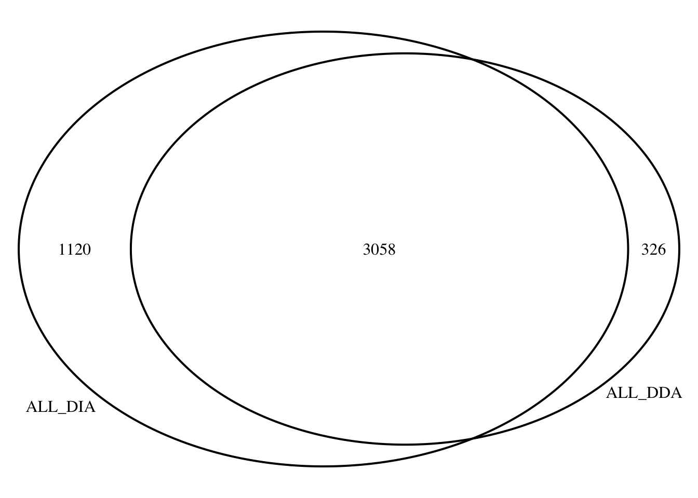

Last updated: 2024-01-12
Checks: 7 0
Knit directory: myproject/
This reproducible R Markdown analysis was created with workflowr (version 1.7.1). The Checks tab describes the reproducibility checks that were applied when the results were created. The Past versions tab lists the development history.
Great! Since the R Markdown file has been committed to the Git repository, you know the exact version of the code that produced these results.
Great job! The global environment was empty. Objects defined in the global environment can affect the analysis in your R Markdown file in unknown ways. For reproduciblity it’s best to always run the code in an empty environment.
The command set.seed(20230911) was run prior to running
the code in the R Markdown file. Setting a seed ensures that any results
that rely on randomness, e.g. subsampling or permutations, are
reproducible.
Great job! Recording the operating system, R version, and package versions is critical for reproducibility.
Nice! There were no cached chunks for this analysis, so you can be confident that you successfully produced the results during this run.
Great job! Using relative paths to the files within your workflowr project makes it easier to run your code on other machines.
Great! You are using Git for version control. Tracking code development and connecting the code version to the results is critical for reproducibility.
The results in this page were generated with repository version d791709. See the Past versions tab to see a history of the changes made to the R Markdown and HTML files.
Note that you need to be careful to ensure that all relevant files for
the analysis have been committed to Git prior to generating the results
(you can use wflow_publish or
wflow_git_commit). workflowr only checks the R Markdown
file, but you know if there are other scripts or data files that it
depends on. Below is the status of the Git repository when the results
were generated:
Ignored files:
Ignored: .DS_Store
Ignored: analysis/.DS_Store
Untracked files:
Untracked: #14_venn_diagramm.png
Untracked: #14_venn_diagramm.png.2024-01-11_15-41-45.log
Untracked: #14_venn_diagramm.png.2024-01-11_15-41-51.log
Untracked: VennDiagram.2024-01-11_15-43-33.log
Untracked: VennDiagram.2024-01-11_15-43-45.log
Untracked: VennDiagram.2024-01-11_15-48-56.log
Untracked: VennDiagram.2024-01-11_15-49-14.log
Untracked: VennDiagram.2024-01-11_15-49-51.log
Untracked: VennDiagram.2024-01-11_15-52-24.log
Untracked: VennDiagram.2024-01-11_15-53-14.log
Untracked: VennDiagram.2024-01-11_15-53-47.log
Untracked: VennDiagram.2024-01-11_15-54-07.log
Untracked: VennDiagram.2024-01-11_18-08-58.log
Untracked: VennDiagram.2024-01-11_18-14-06.log
Untracked: VennDiagram.2024-01-11_18-17-11.log
Untracked: VennDiagram.2024-01-11_18-18-29.log
Untracked: VennDiagram.2024-01-11_18-19-23.log
Untracked: VennDiagram.2024-01-11_18-19-52.log
Untracked: VennDiagram.2024-01-11_18-22-22.log
Untracked: VennDiagram.2024-01-11_18-22-23.log
Untracked: analysis/Data_ind_imp_RUVg_WPCNA.Rmd
Untracked: analysis/Random_bed.R
Unstaged changes:
Modified: Data_ind_Diffabtrial.Rmd
Modified: analysis/Diffabtrial.Rmd
Modified: analysis/Differentially_abundant_proteins_impute.Rmd
Modified: analysis/Differentially_abunddant_proteins.Rmd
Note that any generated files, e.g. HTML, png, CSS, etc., are not included in this status report because it is ok for generated content to have uncommitted changes.
These are the previous versions of the repository in which changes were
made to the R Markdown (analysis/Comparing_DDA_to_DIA.Rmd)
and HTML (docs/Comparing_DDA_to_DIA.html) files. If you’ve
configured a remote Git repository (see ?wflow_git_remote),
click on the hyperlinks in the table below to view the files as they
were in that past version.
| File | Version | Author | Date | Message |
|---|---|---|---|---|
| Rmd | d791709 | Omar-Johnson | 2024-01-12 | Updated after removal of non-human peptides |
library(tidyverse)── Attaching core tidyverse packages ──────────────────────── tidyverse 2.0.0 ──
✔ dplyr 1.1.2 ✔ readr 2.1.4
✔ forcats 1.0.0 ✔ stringr 1.5.0
✔ ggplot2 3.4.3 ✔ tibble 3.2.1
✔ lubridate 1.9.2 ✔ tidyr 1.3.0
✔ purrr 1.0.2
── Conflicts ────────────────────────────────────────── tidyverse_conflicts() ──
✖ dplyr::filter() masks stats::filter()
✖ dplyr::lag() masks stats::lag()
ℹ Use the conflicted package (<http://conflicted.r-lib.org/>) to force all conflicts to become errorsDDA_Toptable <- read.csv(file = "/Users/omarjohnson/Documents/Projects/Dox_Proteomics/Data/Data_Frames/Important_DF_Final/toptable_Dupcor.csv")
DDA_Toptable %>% head() logFC AveExpr t P.Value adj.P.Val B Protein
1 -3.553817 23.99047 -16.74339 2.054348e-08 6.951913e-05 9.416789 Q15327
2 -2.141093 24.25375 -13.55227 1.444049e-07 2.443330e-04 7.859382 O76021
3 -1.634296 19.97143 -12.65816 2.690260e-07 3.034614e-04 7.328583 Q96LW7
4 -4.342380 20.84232 -11.92097 4.632261e-07 3.918893e-04 6.853153 Q969Q1
5 -1.165897 20.44496 -11.62228 5.822611e-07 3.940743e-04 6.649959 P19388
6 -1.762280 20.67219 -10.83369 1.092754e-06 6.163133e-04 6.081777 Q96GQ7DDA_Toptable %>% dim()[1] 3384 7DIA_Toptable <- read.csv(file ="/Users/omarjohnson/Documents/Projects/Dox_Proteomics/Data/Data_Frames/DIA_proteins/RUVIII_Imputed/Toptable_summary_RUVIII.csv" , header = TRUE)
DIA_Toptable %>% head() X logFC AveExpr t P.Value adj.P.Val B
1 Q15061 2.436903 18.60721 26.00939 1.499311e-07 1.499311e-07 7.414993
2 O76021 -2.224860 21.98800 -18.86036 1.191879e-06 1.191879e-06 6.029757
3 P43694 -1.821642 18.81578 -15.98230 3.129665e-06 3.129665e-06 5.276514
4 P01130 -1.819689 20.01194 -15.77595 3.483331e-06 3.483331e-06 5.186033
5 Q96P11 -1.843458 17.28018 -14.33937 5.735316e-06 5.735316e-06 4.764600
6 Q6EMK4 1.838032 19.30419 14.22737 6.455771e-06 6.455771e-06 4.660093
Protein threshold_P
1 Q15061 TRUE
2 O76021 TRUE
3 P43694 TRUE
4 P01130 TRUE
5 Q96P11 TRUE
6 Q6EMK4 TRUEDIA_Toptable %>% dim()[1] 4178 9DDA_and_DIA <- merge(DDA_Toptable,
DIA_Toptable, by.x = "Protein", by.y = "Protein")
# colnames.x correspond to DDA, and colnames.y correspond to DIA.
DDA_and_DIA %>% head() Protein logFC.x AveExpr.x t.x P.Value.x adj.P.Val.x B.x
1 A0A0B4J2D5 0.20404967 28.45442 1.9017522 0.08766216 0.2869147 -5.030079
2 A0FGR8 0.16807616 23.26372 0.7831563 0.45246181 0.6682978 -6.371292
3 A1A4S6 1.25691548 19.09886 1.3350552 0.21271597 0.4479346 -5.806614
4 A1L0T0 -0.25213697 24.34430 -2.3804932 0.03960844 0.1911431 -4.283075
5 A2RRP1 -0.30334810 24.20335 -2.0043164 0.07410958 0.2637085 -4.875179
6 A3KMH1 -0.02219401 25.50247 -0.1750399 0.86469240 0.9318851 -6.677851
X logFC.y AveExpr.y t.y P.Value.y adj.P.Val.y B.y
1 A0A0B4J2D5 0.13528476 23.88276 1.31734301 0.2349365 0.2349365 -6.046336
2 A0FGR8 0.09891217 20.14964 1.18755311 0.2786322 0.2786322 -6.195353
3 A1A4S6 0.14066972 16.85673 1.35338152 0.2233311 0.2233311 -6.003703
4 A1L0T0 -0.11886476 21.50372 -1.89930794 0.1048450 0.1048450 -5.294689
5 A2RRP1 0.01039713 21.36635 0.09930159 0.9240748 0.9240748 -6.919855
6 A3KMH1 0.03750700 22.53324 0.22802321 0.8270631 0.8270631 -6.895697
threshold_P
1 FALSE
2 FALSE
3 FALSE
4 FALSE
5 FALSE
6 FALSEDDA_and_DIA %>% dim()[1] 3058 15# Model all proteins across acquisition types
# Fit linear model
model_LogFC <- lm(logFC.x ~ logFC.y, data = DDA_and_DIA)
# Get R-squared
r2 <- summary(model_LogFC)$r.squared
#------ Plot for both same sign and not same sign
ggplot2::ggplot(DDA_and_DIA, aes(x = logFC.x, y = logFC.y, color = threshold_P)) +
geom_point(size = 2, alpha = 0.5) +
geom_smooth(method = "lm", se = FALSE, color = "black", linetype = "dashed") +
annotate("text", x = Inf, y = Inf, vjust = 2, hjust = 2,
label = paste("R^2 = ", round(r2, digits = 2), sep = ""),
color = "black") +
scale_color_manual(values = c("red", "blue")) +
theme(axis.text.x = element_text(angle = 90, vjust = 0.5, hjust=1)) +
theme_bw()`geom_smooth()` using formula = 'y ~ x'# Model differentially abundant (from DIA) proteins across acquisition types
# Fit linear model
DDA_and_DIA %>% head() Protein logFC.x AveExpr.x t.x P.Value.x adj.P.Val.x B.x
1 A0A0B4J2D5 0.20404967 28.45442 1.9017522 0.08766216 0.2869147 -5.030079
2 A0FGR8 0.16807616 23.26372 0.7831563 0.45246181 0.6682978 -6.371292
3 A1A4S6 1.25691548 19.09886 1.3350552 0.21271597 0.4479346 -5.806614
4 A1L0T0 -0.25213697 24.34430 -2.3804932 0.03960844 0.1911431 -4.283075
5 A2RRP1 -0.30334810 24.20335 -2.0043164 0.07410958 0.2637085 -4.875179
6 A3KMH1 -0.02219401 25.50247 -0.1750399 0.86469240 0.9318851 -6.677851
X logFC.y AveExpr.y t.y P.Value.y adj.P.Val.y B.y
1 A0A0B4J2D5 0.13528476 23.88276 1.31734301 0.2349365 0.2349365 -6.046336
2 A0FGR8 0.09891217 20.14964 1.18755311 0.2786322 0.2786322 -6.195353
3 A1A4S6 0.14066972 16.85673 1.35338152 0.2233311 0.2233311 -6.003703
4 A1L0T0 -0.11886476 21.50372 -1.89930794 0.1048450 0.1048450 -5.294689
5 A2RRP1 0.01039713 21.36635 0.09930159 0.9240748 0.9240748 -6.919855
6 A3KMH1 0.03750700 22.53324 0.22802321 0.8270631 0.8270631 -6.895697
threshold_P
1 FALSE
2 FALSE
3 FALSE
4 FALSE
5 FALSE
6 FALSEDiff_ab_DDA_and_DIA <- DDA_and_DIA[DDA_and_DIA$adj.P.Val.y < 0.05, ]
Diff_ab_DDA_and_DIA %>% head() Protein logFC.x AveExpr.x t.x P.Value.x adj.P.Val.x B.x
15 E9PAV3 -0.41996261 25.78583 -2.6237182 0.0263003158 0.15505273 -3.8867830
25 O00203 0.06090409 22.74772 0.4796207 0.6422585277 0.81177071 -6.5708717
40 O00442 0.32365861 19.81594 2.3054213 0.0449252846 0.20297352 -4.4036650
41 O00461 -0.47579646 22.78785 -5.2536544 0.0004278982 0.01540433 0.2552059
48 O00541 -2.31904608 20.50036 -4.8248426 0.0007877502 0.02117750 -0.3639773
50 O00567 0.24497484 28.51856 1.1617050 0.2734821244 0.51512631 -6.0084778
X logFC.y AveExpr.y t.y P.Value.y adj.P.Val.y B.y
15 E9PAV3 -0.3998172 18.17394 -3.300592 1.587372e-02 1.587372e-02 -3.343002
25 O00203 0.2596199 19.86848 3.353728 1.467563e-02 1.467563e-02 -3.264772
40 O00442 0.5893604 17.23225 4.133940 5.836938e-03 5.836938e-03 -2.269778
41 O00461 -0.2739090 18.74024 -2.919348 2.575340e-02 2.575340e-02 -3.860469
48 O00541 -1.0325875 20.20522 -9.474677 7.036491e-05 7.036491e-05 2.402861
50 O00567 0.4649937 21.77611 4.679509 3.234119e-03 3.234119e-03 -1.630077
threshold_P
15 TRUE
25 TRUE
40 TRUE
41 TRUE
48 TRUE
50 TRUEDiff_ab_DDA_and_DIA %>% dim()[1] 858 15model_LogFC <- lm(logFC.x ~ logFC.y, data = Diff_ab_DDA_and_DIA)
# Get R-squared
r2 <- summary(model_LogFC)$r.squared
#------ Plot for both same sign and not same sign
ggplot2::ggplot(DDA_and_DIA, aes(x = logFC.x, y = logFC.y, color = threshold_P)) +
geom_point(size = 2, alpha = 0.5) +
geom_smooth(method = "lm", se = FALSE, color = "black", linetype = "dashed") +
annotate("text", x = Inf, y = Inf, vjust = 2, hjust = 2,
label = paste("R^2 = ", round(r2, digits = 2), sep = ""),
color = "black") +
scale_color_manual(values = c("red", "blue")) +
theme(axis.text.x = element_text(angle = 90, vjust = 0.5, hjust=1)) +
theme_bw()`geom_smooth()` using formula = 'y ~ x'# Model differentially abundant proteins that are differentially abundant for DIA AND DDA methods
# Fit linear model
DDA_and_DIA %>% head() Protein logFC.x AveExpr.x t.x P.Value.x adj.P.Val.x B.x
1 A0A0B4J2D5 0.20404967 28.45442 1.9017522 0.08766216 0.2869147 -5.030079
2 A0FGR8 0.16807616 23.26372 0.7831563 0.45246181 0.6682978 -6.371292
3 A1A4S6 1.25691548 19.09886 1.3350552 0.21271597 0.4479346 -5.806614
4 A1L0T0 -0.25213697 24.34430 -2.3804932 0.03960844 0.1911431 -4.283075
5 A2RRP1 -0.30334810 24.20335 -2.0043164 0.07410958 0.2637085 -4.875179
6 A3KMH1 -0.02219401 25.50247 -0.1750399 0.86469240 0.9318851 -6.677851
X logFC.y AveExpr.y t.y P.Value.y adj.P.Val.y B.y
1 A0A0B4J2D5 0.13528476 23.88276 1.31734301 0.2349365 0.2349365 -6.046336
2 A0FGR8 0.09891217 20.14964 1.18755311 0.2786322 0.2786322 -6.195353
3 A1A4S6 0.14066972 16.85673 1.35338152 0.2233311 0.2233311 -6.003703
4 A1L0T0 -0.11886476 21.50372 -1.89930794 0.1048450 0.1048450 -5.294689
5 A2RRP1 0.01039713 21.36635 0.09930159 0.9240748 0.9240748 -6.919855
6 A3KMH1 0.03750700 22.53324 0.22802321 0.8270631 0.8270631 -6.895697
threshold_P
1 FALSE
2 FALSE
3 FALSE
4 FALSE
5 FALSE
6 FALSEDiff_ab_DDA_and_DIA <- DDA_and_DIA[(DDA_and_DIA$adj.P.Val.y < 0.05) & (DDA_and_DIA$P.Value.x < 0.05), ]
Diff_ab_DDA_and_DIA %>% head() Protein logFC.x AveExpr.x t.x P.Value.x adj.P.Val.x B.x
15 E9PAV3 -0.4199626 25.78583 -2.623718 0.0263003158 0.15505273 -3.8867830
40 O00442 0.3236586 19.81594 2.305421 0.0449252846 0.20297352 -4.4036650
41 O00461 -0.4757965 22.78785 -5.253654 0.0004278982 0.01540433 0.2552059
48 O00541 -2.3190461 20.50036 -4.824843 0.0007877502 0.02117750 -0.3639773
51 O00571 -0.5290939 26.05640 -4.666530 0.0009934630 0.02334638 -0.5995461
67 O14656 0.4511342 20.15187 3.168577 0.0105478677 0.09013632 -2.9849006
X logFC.y AveExpr.y t.y P.Value.y adj.P.Val.y B.y
15 E9PAV3 -0.3998172 18.17394 -3.300592 1.587372e-02 1.587372e-02 -3.343002
40 O00442 0.5893604 17.23225 4.133940 5.836938e-03 5.836938e-03 -2.269778
41 O00461 -0.2739090 18.74024 -2.919348 2.575340e-02 2.575340e-02 -3.860469
48 O00541 -1.0325875 20.20522 -9.474677 7.036491e-05 7.036491e-05 2.402861
51 O00571 -0.5036178 22.30600 -3.113365 2.025297e-02 2.025297e-02 -3.599754
67 O14656 0.4239736 20.26135 2.960466 2.470779e-02 2.470779e-02 -3.810087
threshold_P
15 TRUE
40 TRUE
41 TRUE
48 TRUE
51 TRUE
67 TRUEDiff_ab_DDA_and_DIA %>% dim()[1] 428 15model_LogFC <- lm(logFC.x ~ logFC.y, data = Diff_ab_DDA_and_DIA)
# Get R-squared
r2 <- summary(model_LogFC)$r.squared
#------ Plot for both same sign and not same sign
ggplot2::ggplot(DDA_and_DIA, aes(x = logFC.x, y = logFC.y)) +
geom_point(size = 2, alpha = 0.5) +
geom_smooth(method = "lm", se = FALSE, color = "black", linetype = "dashed") +
annotate("text", x = Inf, y = Inf, vjust = 2, hjust = 2,
label = paste("R^2 = ", round(r2, digits = 2), sep = ""),
color = "black") +
scale_color_manual(values = c("red", "blue")) +
theme(axis.text.x = element_text(angle = 90, vjust = 0.5, hjust=1)) +
theme_bw()`geom_smooth()` using formula = 'y ~ x'# Model differentially abundant proteins that are NOT differentially abundant for DIA AND DDA methods
# Fit linear model
DDA_and_DIA %>% head() Protein logFC.x AveExpr.x t.x P.Value.x adj.P.Val.x B.x
1 A0A0B4J2D5 0.20404967 28.45442 1.9017522 0.08766216 0.2869147 -5.030079
2 A0FGR8 0.16807616 23.26372 0.7831563 0.45246181 0.6682978 -6.371292
3 A1A4S6 1.25691548 19.09886 1.3350552 0.21271597 0.4479346 -5.806614
4 A1L0T0 -0.25213697 24.34430 -2.3804932 0.03960844 0.1911431 -4.283075
5 A2RRP1 -0.30334810 24.20335 -2.0043164 0.07410958 0.2637085 -4.875179
6 A3KMH1 -0.02219401 25.50247 -0.1750399 0.86469240 0.9318851 -6.677851
X logFC.y AveExpr.y t.y P.Value.y adj.P.Val.y B.y
1 A0A0B4J2D5 0.13528476 23.88276 1.31734301 0.2349365 0.2349365 -6.046336
2 A0FGR8 0.09891217 20.14964 1.18755311 0.2786322 0.2786322 -6.195353
3 A1A4S6 0.14066972 16.85673 1.35338152 0.2233311 0.2233311 -6.003703
4 A1L0T0 -0.11886476 21.50372 -1.89930794 0.1048450 0.1048450 -5.294689
5 A2RRP1 0.01039713 21.36635 0.09930159 0.9240748 0.9240748 -6.919855
6 A3KMH1 0.03750700 22.53324 0.22802321 0.8270631 0.8270631 -6.895697
threshold_P
1 FALSE
2 FALSE
3 FALSE
4 FALSE
5 FALSE
6 FALSEDiff_ab_DDA_and_DIA <- DDA_and_DIA[(DDA_and_DIA$adj.P.Val.y > 0.05) & (DDA_and_DIA$P.Value.x > 0.05), ]
Diff_ab_DDA_and_DIA %>% head() Protein logFC.x AveExpr.x t.x P.Value.x adj.P.Val.x B.x
1 A0A0B4J2D5 0.20404967 28.45442 1.9017522 0.08766216 0.2869147 -5.030079
2 A0FGR8 0.16807616 23.26372 0.7831563 0.45246181 0.6682978 -6.371292
3 A1A4S6 1.25691548 19.09886 1.3350552 0.21271597 0.4479346 -5.806614
5 A2RRP1 -0.30334810 24.20335 -2.0043164 0.07410958 0.2637085 -4.875179
6 A3KMH1 -0.02219401 25.50247 -0.1750399 0.86469240 0.9318851 -6.677851
7 A4D1E9 -0.29082103 21.22996 -1.6046912 0.14098100 0.3630873 -5.456428
X logFC.y AveExpr.y t.y P.Value.y adj.P.Val.y B.y
1 A0A0B4J2D5 0.13528476 23.88276 1.31734301 0.2349365 0.2349365 -6.046336
2 A0FGR8 0.09891217 20.14964 1.18755311 0.2786322 0.2786322 -6.195353
3 A1A4S6 0.14066972 16.85673 1.35338152 0.2233311 0.2233311 -6.003703
5 A2RRP1 0.01039713 21.36635 0.09930159 0.9240748 0.9240748 -6.919855
6 A3KMH1 0.03750700 22.53324 0.22802321 0.8270631 0.8270631 -6.895697
7 A4D1E9 0.08757962 22.56991 0.56521074 0.5920505 0.5920505 -6.746126
threshold_P
1 FALSE
2 FALSE
3 FALSE
5 FALSE
6 FALSE
7 FALSEDiff_ab_DDA_and_DIA %>% dim()[1] 1909 15model_LogFC <- lm(logFC.x ~ logFC.y, data = Diff_ab_DDA_and_DIA)
# Get R-squared
r2 <- summary(model_LogFC)$r.squared
#------ Plot for both same sign and not same sign
ggplot2::ggplot(DDA_and_DIA, aes(x = logFC.x, y = logFC.y)) +
geom_point(size = 2, alpha = 0.5) +
geom_smooth(method = "lm", se = FALSE, color = "black", linetype = "dashed") +
annotate("text", x = Inf, y = Inf, vjust = 2, hjust = 2,
label = paste("R^2 = ", round(r2, digits = 2), sep = ""),
color = "black") +
scale_color_manual(values = c("red", "blue")) +
theme(axis.text.x = element_text(angle = 90, vjust = 0.5, hjust=1)) +
theme_bw()`geom_smooth()` using formula = 'y ~ x'dev.off()null device
1 # How many peptides overlap between DDA and DIA methods?
DDA_and_DIA %>% nrow()[1] 3058# Load library
library(VennDiagram)Loading required package: gridLoading required package: futile.logger# Define protein sets
ALL_DDA <- DDA_Toptable$Protein
ALL_DIA <- DIA_Toptable$Protein
# Generate Venn diagram
venn.plot <- venn.diagram(
x = list(ALL_DDA,ALL_DIA),
filename = NULL,
category.names = c("ALL_DDA", "ALL_DIA"),
output = TRUE
)
grid.draw(venn.plot)
dev.off()null device
1 # How many differentially abundant peptides overlap between DDA and DIA methods?
# Load library
library(VennDiagram)
# Define protein sets
DE_DDA <- DDA_Toptable[DDA_Toptable$P.Value < 0.05, ]$Protein
DE_DIA <- DIA_Toptable[DIA_Toptable$P.Value < 0.05, ]$Protein
# Generate Venn diagram
venn.plot <- venn.diagram(
x = list(DE_DDA,DE_DIA),
filename = NULL,
category.names = c("DEL_DDA", "DE_DIA"),
output = TRUE
)
grid.draw(venn.plot)Common_DE_DDA_DIA <- intersect(DE_DDA,DE_DIA)
Common_DE_DDA_DIA_DF <- DDA_and_DIA[DDA_and_DIA$Protein %in% Common_DE_DDA_DIA, ]model_LogFC <- lm(logFC.x ~ logFC.y, data = Common_DE_DDA_DIA_DF)
# Get R-squared
r2 <- summary(model_LogFC)$r.squared
#------ Plot for both same sign and not same sign
ggplot2::ggplot(Common_DE_DDA_DIA_DF, aes(x = logFC.x, y = logFC.y)) +
geom_point(size = 2, alpha = 0.5) +
geom_smooth(method = "lm", se = FALSE, color = "black", linetype = "dashed") +
annotate("text", x = Inf, y = Inf, vjust = 2, hjust = 2,
label = paste("R^2 = ", round(r2, digits = 2), sep = ""),
color = "black") +
scale_color_manual(values = c("red", "blue")) +
theme(axis.text.x = element_text(angle = 90, vjust = 0.5, hjust=1)) +
theme_bw()`geom_smooth()` using formula = 'y ~ x'DDA_Ab <- read.csv(file = "/Users/omarjohnson/Documents/Projects/Dox_Proteomics/Data/Data_Frames/Abundance.csv", header = TRUE)
DIA_Ab <- read.csv(file = "/Users/omarjohnson/Documents/Projects/Dox_Proteomics/Data/Data_Frames/RNA_Protein_DF/Data_ind_prot_DOX_24hr.csv", header = TRUE)
Meta <- read.csv(file = "/Users/omarjohnson/Documents/Projects/Dox_Proteomics/Data/Data_Frames/DIA_proteins/RUVIII_Imputed/Meta.csv", header = TRUE, row.names = 1)
Meta Samples Ind Rep Cond Cond_Ind
S1 S1 B_77 Bio Dox B_77_Dox
S3 S3 C_87 Bio Dox C_87_Dox
S5 S5 A_48 Tech Dox A_48_Dox
S7 S7 A_48 Tech Dox A_48_Dox
S9 S9 A_48 Tech Dox A_48_Dox
S2 S2 B_77 Bio Control B_77_Control
S4 S4 C_87 Bio Control C_87_Control
S6 S6 A_48 Tech Control A_48_Control
S8 S8 A_48 Tech Control A_48_Control
S10 S10 A_48 Tech Control A_48_ControlDDA_Ab %>% head() Entrez.Gene.ID Ensembl.Gene.ID Gene.Symbol Accession
1 4625 ENSG00000092054 MYH7 P12883
2 4624 ENSG00000197616 MYH6 P13533
3 7273 ENSG00000155657 TTN Q8WZ42
4 70 ENSG00000159251 ACTC1 P68032
5 58 ENSG00000143632 ACTA1 P68133
6 60 ENSG00000075624 ACTB P60709
Abundance..F1..Sample..Dox..n.a Abundance..F3..Sample..Dox..n.a
1 5.25e+10 7.41e+10
2 1.00e+09 1.47e+09
3 1.39e+10 2.08e+10
4 3.92e+10 4.11e+10
5 1.72e+07 5.81e+07
6 4.02e+09 8.43e+08
Abundance..F5..Sample..Dox..Dox Abundance..F7..Sample..Dox..Dox
1 5.28e+10 6.82e+10
2 5.11e+09 4.25e+09
3 2.19e+10 2.49e+10
4 3.76e+10 3.54e+10
5 3.85e+07 5.07e+07
6 2.04e+09 1.62e+09
Abundance..F9..Sample..Dox..Dox Abundance..F2..Control..Veh..n.a
1 6.43e+10 4.33e+10
2 2.62e+09 1.50e+09
3 2.34e+10 1.29e+10
4 3.69e+10 3.54e+10
5 6.19e+07 1.64e+07
6 1.61e+09 4.16e+09
Abundance..F4..Control..Veh..n.a Abundance..F6..Control..Veh..Veh
1 7.41e+10 7.00e+10
2 1.17e+09 2.42e+09
3 2.25e+10 2.52e+10
4 2.96e+10 3.56e+10
5 3.44e+07 5.42e+07
6 6.45e+08 1.92e+09
Abundance..F8..Control..Veh..Veh Abundance..F10..Control..Veh..Veh
1 5.64e+10 5.26e+10
2 3.67e+09 3.27e+09
3 2.46e+10 2.21e+10
4 2.98e+10 2.91e+10
5 3.36e+07 4.05e+07
6 1.81e+09 1.56e+09DDA_Ab %>% dim()[1] 4504 14DIA_Ab %>% head() Protein.Group Protein.Ids Protein.Names Genes First.Protein.Description
1 A0A0B4J2A2 A0A0B4J2A2 NA PPIAL4C NA
2 A0A0B4J2D5 A0A0B4J2D5 NA GATD3B NA
3 A0A494C071 A0A494C071 NA PWWP4 NA
4 A0AVT1 A0AVT1 NA UBA6 NA
5 A0FGR8 A0FGR8 NA ESYT2 NA
6 A0JLT2 A0JLT2 NA MED19 NA
S1 S3 S5 S7 S9 S2 S4 S6
1 979954.0 1470000 1460000 1560000 1700000 940535.0 2020000 1460000
2 16000000.0 17000000 15800000 14400000 15500000 15300000.0 13500000 13600000
3 381352.0 429735 287237 412285 380499 433456.0 540008 376304
4 62810.7 135522 159045 123045 123823 49388.1 144860 127488
5 1240000.0 1120000 969130 1040000 1020000 1120000.0 1120000 1080000
6 217977.0 181404 182657 145408 208660 224881.0 202427 160150
S8 S10
1 1390000 1620000
2 13200000 12600000
3 460580 355701
4 84684 102306
5 1120000 1060000
6 126127 209726DIA_Ab %>% dim()[1] 4261 15DDA_Ab %>% colnames() [1] "Entrez.Gene.ID" "Ensembl.Gene.ID"
[3] "Gene.Symbol" "Accession"
[5] "Abundance..F1..Sample..Dox..n.a" "Abundance..F3..Sample..Dox..n.a"
[7] "Abundance..F5..Sample..Dox..Dox" "Abundance..F7..Sample..Dox..Dox"
[9] "Abundance..F9..Sample..Dox..Dox" "Abundance..F2..Control..Veh..n.a"
[11] "Abundance..F4..Control..Veh..n.a" "Abundance..F6..Control..Veh..Veh"
[13] "Abundance..F8..Control..Veh..Veh" "Abundance..F10..Control..Veh..Veh"# Subset the columns referring to abundance
DDA_Ab <-DDA_Ab[,4:14]
DDA_Ab %>% head() Accession Abundance..F1..Sample..Dox..n.a Abundance..F3..Sample..Dox..n.a
1 P12883 5.25e+10 7.41e+10
2 P13533 1.00e+09 1.47e+09
3 Q8WZ42 1.39e+10 2.08e+10
4 P68032 3.92e+10 4.11e+10
5 P68133 1.72e+07 5.81e+07
6 P60709 4.02e+09 8.43e+08
Abundance..F5..Sample..Dox..Dox Abundance..F7..Sample..Dox..Dox
1 5.28e+10 6.82e+10
2 5.11e+09 4.25e+09
3 2.19e+10 2.49e+10
4 3.76e+10 3.54e+10
5 3.85e+07 5.07e+07
6 2.04e+09 1.62e+09
Abundance..F9..Sample..Dox..Dox Abundance..F2..Control..Veh..n.a
1 6.43e+10 4.33e+10
2 2.62e+09 1.50e+09
3 2.34e+10 1.29e+10
4 3.69e+10 3.54e+10
5 6.19e+07 1.64e+07
6 1.61e+09 4.16e+09
Abundance..F4..Control..Veh..n.a Abundance..F6..Control..Veh..Veh
1 7.41e+10 7.00e+10
2 1.17e+09 2.42e+09
3 2.25e+10 2.52e+10
4 2.96e+10 3.56e+10
5 3.44e+07 5.42e+07
6 6.45e+08 1.92e+09
Abundance..F8..Control..Veh..Veh Abundance..F10..Control..Veh..Veh
1 5.64e+10 5.26e+10
2 3.67e+09 3.27e+09
3 2.46e+10 2.21e+10
4 2.98e+10 2.91e+10
5 3.36e+07 4.05e+07
6 1.81e+09 1.56e+09colnames(DDA_Ab) <- c("Accession", "S1" , "S3" , "S5" , "S7", "S9", "S2", "S4", "S6" , "S8", "S10")
DDA_Ab %>% head() Accession S1 S3 S5 S7 S9 S2 S4
1 P12883 5.25e+10 7.41e+10 5.28e+10 6.82e+10 6.43e+10 4.33e+10 7.41e+10
2 P13533 1.00e+09 1.47e+09 5.11e+09 4.25e+09 2.62e+09 1.50e+09 1.17e+09
3 Q8WZ42 1.39e+10 2.08e+10 2.19e+10 2.49e+10 2.34e+10 1.29e+10 2.25e+10
4 P68032 3.92e+10 4.11e+10 3.76e+10 3.54e+10 3.69e+10 3.54e+10 2.96e+10
5 P68133 1.72e+07 5.81e+07 3.85e+07 5.07e+07 6.19e+07 1.64e+07 3.44e+07
6 P60709 4.02e+09 8.43e+08 2.04e+09 1.62e+09 1.61e+09 4.16e+09 6.45e+08
S6 S8 S10
1 7.00e+10 5.64e+10 5.26e+10
2 2.42e+09 3.67e+09 3.27e+09
3 2.52e+10 2.46e+10 2.21e+10
4 3.56e+10 2.98e+10 2.91e+10
5 5.42e+07 3.36e+07 4.05e+07
6 1.92e+09 1.81e+09 1.56e+09# Identify duplicated values
DDA_Ab$duplicated_name <- duplicated(DDA_Ab$Accession)
# This will return a logical vector where TRUE indicates the position of duplicates in the column.
duplicated_rows <- DDA_Ab[DDA_Ab$duplicated_name == TRUE, ]
print(duplicated_rows) Accession S1 S3 S5 S7 S9 S2 S4
61 P04264 3.87e+08 1.45e+08 2.58e+08 7.07e+08 3.17e+08 1.19e+10 1.11e+09
276 P35908 NA NA NA NA NA 5.31e+06 1.14e+06
997 P04040 NA NA NA NA NA NA NA
S6 S8 S10 duplicated_name
61 8.03e+08 4.61e+08 5.45e+08 TRUE
276 NA 5.00e+05 4.90e+05 TRUE
997 NA NA NA TRUEduplicated_rows %>% rownames()[1] "61" "276" "997"# remove duplicated rows
DDA_Ab <- DDA_Ab[-c(61 , 276, 997), ]
# Make rownames of the data frame accession IDs
rownames(DDA_Ab) <- DDA_Ab$Accession
# Change colnames
colnames(DDA_Ab) [1] "Accession" "S1" "S3" "S5"
[5] "S7" "S9" "S2" "S4"
[9] "S6" "S8" "S10" "duplicated_name"DDA_Ab <- DDA_Ab[, -c(1, 12)]
DDA_Ab %>% head() S1 S3 S5 S7 S9 S2 S4 S6
P12883 5.25e+10 7.41e+10 5.28e+10 6.82e+10 6.43e+10 4.33e+10 7.41e+10 7.00e+10
P13533 1.00e+09 1.47e+09 5.11e+09 4.25e+09 2.62e+09 1.50e+09 1.17e+09 2.42e+09
Q8WZ42 1.39e+10 2.08e+10 2.19e+10 2.49e+10 2.34e+10 1.29e+10 2.25e+10 2.52e+10
P68032 3.92e+10 4.11e+10 3.76e+10 3.54e+10 3.69e+10 3.54e+10 2.96e+10 3.56e+10
P68133 1.72e+07 5.81e+07 3.85e+07 5.07e+07 6.19e+07 1.64e+07 3.44e+07 5.42e+07
P60709 4.02e+09 8.43e+08 2.04e+09 1.62e+09 1.61e+09 4.16e+09 6.45e+08 1.92e+09
S8 S10
P12883 5.64e+10 5.26e+10
P13533 3.67e+09 3.27e+09
Q8WZ42 2.46e+10 2.21e+10
P68032 2.98e+10 2.91e+10
P68133 3.36e+07 4.05e+07
P60709 1.81e+09 1.56e+09DDA_Ab %>% dim()[1] 4501 10DDA_Ab <- na.omit(DDA_Ab)
DIA_Ab %>% head() Protein.Group Protein.Ids Protein.Names Genes First.Protein.Description
1 A0A0B4J2A2 A0A0B4J2A2 NA PPIAL4C NA
2 A0A0B4J2D5 A0A0B4J2D5 NA GATD3B NA
3 A0A494C071 A0A494C071 NA PWWP4 NA
4 A0AVT1 A0AVT1 NA UBA6 NA
5 A0FGR8 A0FGR8 NA ESYT2 NA
6 A0JLT2 A0JLT2 NA MED19 NA
S1 S3 S5 S7 S9 S2 S4 S6
1 979954.0 1470000 1460000 1560000 1700000 940535.0 2020000 1460000
2 16000000.0 17000000 15800000 14400000 15500000 15300000.0 13500000 13600000
3 381352.0 429735 287237 412285 380499 433456.0 540008 376304
4 62810.7 135522 159045 123045 123823 49388.1 144860 127488
5 1240000.0 1120000 969130 1040000 1020000 1120000.0 1120000 1080000
6 217977.0 181404 182657 145408 208660 224881.0 202427 160150
S8 S10
1 1390000 1620000
2 13200000 12600000
3 460580 355701
4 84684 102306
5 1120000 1060000
6 126127 209726DIA_Ab %>% colnames() [1] "Protein.Group" "Protein.Ids"
[3] "Protein.Names" "Genes"
[5] "First.Protein.Description" "S1"
[7] "S3" "S5"
[9] "S7" "S9"
[11] "S2" "S4"
[13] "S6" "S8"
[15] "S10" # Subset the columns referring to abundance
DIA_Ab <-DIA_Ab[,c(2, 6:15)]
DIA_Ab %>% head() Protein.Ids S1 S3 S5 S7 S9 S2
1 A0A0B4J2A2 979954.0 1470000 1460000 1560000 1700000 940535.0
2 A0A0B4J2D5 16000000.0 17000000 15800000 14400000 15500000 15300000.0
3 A0A494C071 381352.0 429735 287237 412285 380499 433456.0
4 A0AVT1 62810.7 135522 159045 123045 123823 49388.1
5 A0FGR8 1240000.0 1120000 969130 1040000 1020000 1120000.0
6 A0JLT2 217977.0 181404 182657 145408 208660 224881.0
S4 S6 S8 S10
1 2020000 1460000 1390000 1620000
2 13500000 13600000 13200000 12600000
3 540008 376304 460580 355701
4 144860 127488 84684 102306
5 1120000 1080000 1120000 1060000
6 202427 160150 126127 209726colnames(DIA_Ab) <- c("Accession", "S1" , "S3" , "S5" , "S7", "S9", "S2", "S4", "S6" , "S8", "S10")
DIA_Ab %>% head() Accession S1 S3 S5 S7 S9 S2 S4
1 A0A0B4J2A2 979954.0 1470000 1460000 1560000 1700000 940535.0 2020000
2 A0A0B4J2D5 16000000.0 17000000 15800000 14400000 15500000 15300000.0 13500000
3 A0A494C071 381352.0 429735 287237 412285 380499 433456.0 540008
4 A0AVT1 62810.7 135522 159045 123045 123823 49388.1 144860
5 A0FGR8 1240000.0 1120000 969130 1040000 1020000 1120000.0 1120000
6 A0JLT2 217977.0 181404 182657 145408 208660 224881.0 202427
S6 S8 S10
1 1460000 1390000 1620000
2 13600000 13200000 12600000
3 376304 460580 355701
4 127488 84684 102306
5 1080000 1120000 1060000
6 160150 126127 209726# Identify duplicated values
DIA_Ab$duplicated_name <- duplicated(DIA_Ab$Accession)
# This will return a logical vector where TRUE indicates the position of duplicates in the column.
duplicated_rows <- DIA_Ab[DIA_Ab$duplicated_name == TRUE, ]
print(duplicated_rows) [1] Accession S1 S3 S5
[5] S7 S9 S2 S4
[9] S6 S8 S10 duplicated_name
<0 rows> (or 0-length row.names)duplicated_rows %>% rownames()character(0)# remove duplicated rows-None to remove for DIA
# Make rownames of the data frame accession IDs
rownames(DIA_Ab) <- DIA_Ab$Accession
# Change colnames
colnames(DIA_Ab) [1] "Accession" "S1" "S3" "S5"
[5] "S7" "S9" "S2" "S4"
[9] "S6" "S8" "S10" "duplicated_name"DIA_Ab <- DIA_Ab[, -c(1, 12)]
DIA_Ab <- na.omit(DIA_Ab)
Meta Samples Ind Rep Cond Cond_Ind
S1 S1 B_77 Bio Dox B_77_Dox
S3 S3 C_87 Bio Dox C_87_Dox
S5 S5 A_48 Tech Dox A_48_Dox
S7 S7 A_48 Tech Dox A_48_Dox
S9 S9 A_48 Tech Dox A_48_Dox
S2 S2 B_77 Bio Control B_77_Control
S4 S4 C_87 Bio Control C_87_Control
S6 S6 A_48 Tech Control A_48_Control
S8 S8 A_48 Tech Control A_48_Control
S10 S10 A_48 Tech Control A_48_ControlDDA_Ab_Veh <- DDA_Ab[, c(6:10)]
DIA_Ab_Veh <- DIA_Ab[,c(6:10)]
DDA_Ab_Veh %>% head() S2 S4 S6 S8 S10
P12883 4.33e+10 7.41e+10 7.00e+10 5.64e+10 5.26e+10
P13533 1.50e+09 1.17e+09 2.42e+09 3.67e+09 3.27e+09
Q8WZ42 1.29e+10 2.25e+10 2.52e+10 2.46e+10 2.21e+10
P68032 3.54e+10 2.96e+10 3.56e+10 2.98e+10 2.91e+10
P68133 1.64e+07 3.44e+07 5.42e+07 3.36e+07 4.05e+07
P60709 4.16e+09 6.45e+08 1.92e+09 1.81e+09 1.56e+09DIA_Ab_Veh %>% head() S2 S4 S6 S8 S10
A0A0B4J2A2 940535.0 2020000 1460000 1390000 1620000
A0A0B4J2D5 15300000.0 13500000 13600000 13200000 12600000
A0A494C071 433456.0 540008 376304 460580 355701
A0AVT1 49388.1 144860 127488 84684 102306
A0FGR8 1120000.0 1120000 1080000 1120000 1060000
A0JLT2 224881.0 202427 160150 126127 209726DDA_Ab_Veh_Avg <- rowMeans(DDA_Ab_Veh)
DDA_Ab_Veh_Avg_DF <- as.data.frame(DDA_Ab_Veh_Avg)
DDA_Ab_Veh_Avg_DF$Pro <- rownames(DDA_Ab_Veh_Avg_DF)
DDA_Ab_Veh_Avg_DF %>% head() DDA_Ab_Veh_Avg Pro
P12883 5.928e+10 P12883
P13533 2.406e+09 P13533
Q8WZ42 2.146e+10 Q8WZ42
P68032 3.190e+10 P68032
P68133 3.582e+07 P68133
P60709 2.019e+09 P60709DIA_Ab_Veh_Avg <- rowMeans(DIA_Ab_Veh)
DIA_Ab_Veh_Avg_DF <- as.data.frame(DIA_Ab_Veh_Avg)
DIA_Ab_Veh_Avg_DF$Pro <- rownames(DIA_Ab_Veh_Avg_DF)
DIA_Ab_Veh_Avg_DF %>% head() DIA_Ab_Veh_Avg Pro
A0A0B4J2A2 1486107.0 A0A0B4J2A2
A0A0B4J2D5 13640000.0 A0A0B4J2D5
A0A494C071 433209.8 A0A494C071
A0AVT1 101745.2 A0AVT1
A0FGR8 1100000.0 A0FGR8
A0JLT2 184662.2 A0JLT2Merged_Veh_Avg <- merge(DDA_Ab_Veh_Avg_DF, DIA_Ab_Veh_Avg_DF, by = "Pro")
Merged_Veh_Avg %>% head() Pro DDA_Ab_Veh_Avg DIA_Ab_Veh_Avg
1 A0A0B4J2D5 357600000 13640000
2 A0FGR8 10452000 1100000
3 A1A4S6 763630 254869
4 A1L0T0 24220000 3786000
5 A2RRP1 22620000 1642000
6 A3KMH1 50500000 2358000Merged_Veh_Avg %>% dim()[1] 3026 3model_Abundances <- lm(DDA_Ab_Veh_Avg ~ DIA_Ab_Veh_Avg, data = Merged_Veh_Avg)
# Get R-squared
r2 <- summary(model_Abundances)$r.squared
#------ Plot for both same sign and not same sign
ggplot2::ggplot(Merged_Veh_Avg, aes(x = DDA_Ab_Veh_Avg, y = DIA_Ab_Veh_Avg)) +
geom_point(size = 2, alpha = 0.5) +
geom_smooth(method = "lm", se = FALSE, color = "black", linetype = "dashed") +
annotate("text", x = Inf, y = Inf, vjust = 2, hjust = 2,
label = paste("R^2 = ", round(r2, digits = 2), sep = ""),
color = "black") +
scale_color_manual(values = c("red", "blue")) +
theme(axis.text.x = element_text(angle = 90, vjust = 0.5, hjust=1)) +
theme_bw()`geom_smooth()` using formula = 'y ~ x'Merged_Veh_Avg$DDA_Ab_Veh_Avg_log2 <- log2(Merged_Veh_Avg$DDA_Ab_Veh_Avg)
Merged_Veh_Avg$DIA_Ab_Veh_Avg_log2 <- log2(Merged_Veh_Avg$DIA_Ab_Veh_Avg)
model_Abundances <- lm(DDA_Ab_Veh_Avg_log2 ~ DIA_Ab_Veh_Avg_log2, data = Merged_Veh_Avg)
# Get R-squared
r2 <- summary(model_Abundances)$r.squared
#------ Plot for both same sign and not same sign
ggplot2::ggplot(Merged_Veh_Avg, aes(x = DDA_Ab_Veh_Avg_log2, y = DIA_Ab_Veh_Avg_log2)) +
geom_point(size = 2, alpha = 0.5) +
geom_smooth(method = "lm", se = FALSE, color = "black", linetype = "dashed") +
annotate("text", x = Inf, y = Inf, vjust = 2, hjust = 2,
label = paste("R^2 = ", round(r2, digits = 2), sep = ""),
color = "black") +
scale_color_manual(values = c("red", "blue")) +
theme(axis.text.x = element_text(angle = 90, vjust = 0.5, hjust=1)) +
theme_bw()`geom_smooth()` using formula = 'y ~ x'
sessionInfo()R version 4.2.0 (2022-04-22)
Platform: x86_64-apple-darwin17.0 (64-bit)
Running under: macOS Big Sur/Monterey 10.16
Matrix products: default
BLAS: /Library/Frameworks/R.framework/Versions/4.2/Resources/lib/libRblas.0.dylib
LAPACK: /Library/Frameworks/R.framework/Versions/4.2/Resources/lib/libRlapack.dylib
locale:
[1] en_US.UTF-8/en_US.UTF-8/en_US.UTF-8/C/en_US.UTF-8/en_US.UTF-8
attached base packages:
[1] grid stats graphics grDevices utils datasets methods
[8] base
other attached packages:
[1] VennDiagram_1.7.3 futile.logger_1.4.3 lubridate_1.9.2
[4] forcats_1.0.0 stringr_1.5.0 dplyr_1.1.2
[7] purrr_1.0.2 readr_2.1.4 tidyr_1.3.0
[10] tibble_3.2.1 ggplot2_3.4.3 tidyverse_2.0.0
[13] workflowr_1.7.1
loaded via a namespace (and not attached):
[1] Rcpp_1.0.11 lattice_0.21-8 getPass_0.2-2
[4] ps_1.7.5 rprojroot_2.0.3 digest_0.6.33
[7] utf8_1.2.3 R6_2.5.1 futile.options_1.0.1
[10] evaluate_0.21 httr_1.4.7 highr_0.10
[13] pillar_1.9.0 rlang_1.1.1 rstudioapi_0.15.0
[16] whisker_0.4.1 callr_3.7.3 jquerylib_0.1.4
[19] Matrix_1.5-4.1 rmarkdown_2.24 labeling_0.4.2
[22] splines_4.2.0 munsell_0.5.0 compiler_4.2.0
[25] httpuv_1.6.11 xfun_0.40 pkgconfig_2.0.3
[28] mgcv_1.9-0 htmltools_0.5.6 tidyselect_1.2.0
[31] fansi_1.0.4 tzdb_0.4.0 withr_2.5.0
[34] later_1.3.1 nlme_3.1-163 jsonlite_1.8.7
[37] gtable_0.3.4 lifecycle_1.0.3 formatR_1.14
[40] git2r_0.32.0 magrittr_2.0.3 scales_1.2.1
[43] cli_3.6.1 stringi_1.7.12 cachem_1.0.8
[46] farver_2.1.1 fs_1.6.3 promises_1.2.1
[49] bslib_0.5.1 generics_0.1.3 vctrs_0.6.3
[52] lambda.r_1.2.4 tools_4.2.0 glue_1.6.2
[55] hms_1.1.3 processx_3.8.2 fastmap_1.1.1
[58] yaml_2.3.7 timechange_0.2.0 colorspace_2.1-0
[61] knitr_1.43 sass_0.4.7